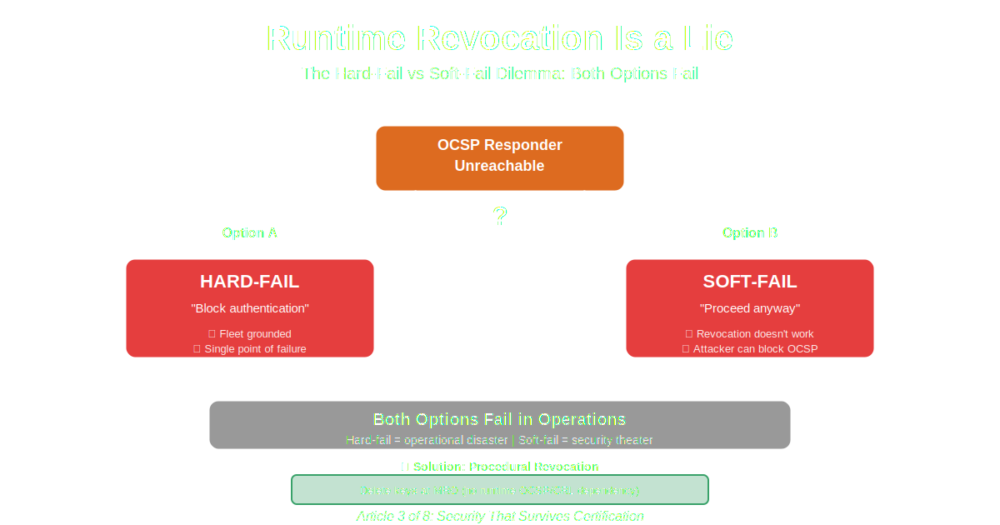

Security That Survives Certification • Article 3 of 8
Cybersecurity in Aircraft–Ground Systems: Runtime Revocation Is a Lie
Why OCSP, CRLs, and "just check online" collapse in real operations

Your security team has designed the certificate infrastructure. During the design review, someone asks: "What happens when we need to revoke a certificate?"
The answer comes quickly: "OCSP. We'll check certificate status in real-time during authentication."
It sounds reasonable. OCSP (Online Certificate Status Protocol) is an RFC standard. Everyone uses it. Problem solved.
Except it doesn't work in the operational reality of safety-critical embedded systems.
Not because OCSP is technically broken. Because the assumptions OCSP makes—always-on connectivity, acceptable latency, graceful degradation—are fundamentally incompatible with deterministic, availability-constrained, certified embedded systems.
Assumed threat model for this article: A pre-established trust architecture where a bounded set of authorized ground tools authenticates to aircraft systems. Revocation events are low-frequency (stolen equipment, insider compromise, supply chain incidents). The maintenance network may be intermittently connected. The adversary may be capable of network-level interference but is not assumed to have compromised the aircraft systems directly. Under these assumptions—which are representative of civil and military aviation maintenance infrastructure—runtime revocation introduces operational tradeoffs that conflict with certification requirements.
The OCSP Fantasy
Here's how OCSP is supposed to work:
1
Client receives certificate during TLS handshake
2
Client extracts OCSP responder URL from certificate
3
Client sends OCSP request to responder
"Is certificate serial 0x1234ABCD still valid?"
4
OCSP responder checks database, returns status
"Good" / "Revoked" / "Unknown"
5
Client proceeds or aborts based on response
In theory: Real-time revocation checking. Compromised certificates immediately rejected.
In practice: Steps 3-5 fail constantly.
The Operational Reality
Scenario 1: OCSP Responder Unavailable
Location: Remote maintenance facility, 200 miles from headquarters
Time: 2:00 AM
Situation: Emergency maintenance required
Technician: [connects maintenance laptop]
System: Authenticating...
Certificate received
Checking revocation status...
OCSP request to ocsp.example.com
DNS lookup... timeout (10 seconds)
Retry 1... timeout (10 seconds)
Retry 2... timeout (10 seconds)
Retry 3... timeout (10 seconds)
Total elapsed: 40 seconds
Now what?
The question that kills operations:
OCSP Responder Unreachable
↓
Option A: Hard-fail
Block all authentication fleet-wide
OR
Option B: Soft-fail
Proceed without revocation check
The Hard-Fail Dilemma
Hard-fail means: If OCSP check fails, authentication fails.
Operational impact:
- OCSP responder outage = fleet-wide grounding
- Network partition = no maintenance possible
- DNS issues = operations halted
- Certificate server maintenance = operational disruption
- DDoS against OCSP = service denial
You've created a single point of failure in infrastructure you don't control, that affects safety-critical operations.
The Soft-Fail Dilemma
Soft-fail means: If OCSP check fails, proceed anyway.
Security impact:
- Revocation becomes optional (attacker can block OCSP)
- Compromised certificates stay valid
- Certificate revocation loses its purpose
- Compliance violation (if regulations require revocation checking)
Soft-fail means revocation doesn't work when you need it most—when an attacker is actively exploiting a compromise.
The Cached Response Problem
Some implementations try a middle ground: "Cache OCSP responses for 24-48 hours."
Problems:
- Stale data: Certificate revoked at T+0, cache valid until T+48h
- Initial connection: No cache on first authentication
- Cache invalidation: When do you trust cached "good" vs demand fresh check?
- Storage requirements: Cache for every certificate ever seen
- Compliance: Is 48-hour-old revocation status acceptable?
48 hours
window where revoked cert still works
Scenario 2: OCSP as Attack Vector
An attacker who compromises a ground tool certificate doesn't just get access. They get operational leverage.
Attack Timeline
T+0 hours: Attacker compromises ground tool certificate
Security team detects compromise
Certificate revoked in CA database
OCSP responder updated
T+0.5 hours: Attacker attempts to use compromised certificate
// Soft-fail configuration:
T+0.5 hours: Attacker blocks OCSP requests (DNS poisoning, firewall)
OCSP check times out
System soft-fails → authentication succeeds
Attacker has access despite revocation
// Hard-fail configuration:
T+0.5 hours: Attacker blocks OCSP requests
OCSP check times out
System hard-fails → all authentication blocked
Attacker achieves denial of service
Fleet grounded until network fixed
Outcome: In both configurations, a network-capable attacker who can interpose on OCSP traffic achieves a meaningful objective.
- Soft-fail: Attacker blocks OCSP → authentication proceeds with revoked credential → access maintained despite revocation
- Hard-fail: Attacker blocks OCSP → authentication fails → availability degraded or fleet grounded
This attack requires the adversary to already control network infrastructure (DNS, firewall, or routing path to the OCSP responder) at the time of the revocation event. That is a meaningful precondition. The point is not that this attack is trivial—it is that OCSP gives a network-capable adversary operational leverage that is absent in a purely procedural model. Choosing between soft-fail and hard-fail forces a tradeoff between security integrity and operational availability that has no good solution under network-adversary assumptions.
Why CRLs Don't Fix This
Certificate Revocation Lists (CRLs) are the older alternative to OCSP.
How CRLs work:
- CA publishes a list of revoked certificate serial numbers
- Clients download and cache the CRL
- During authentication, client checks if cert serial is in CRL
Sounds better than OCSP, right? You download once, cache locally, no per-connection lookup.
CRL Problems
Problem 1: CRL Size
10 MB
typical CRL size for enterprise CA
Every device needs to download and store a 10MB file. For a fleet of 100 aircraft × 20 ground tools = 2,000 endpoints, that's 20GB of CRL storage distributed across the fleet.
Problem 2: Update Frequency
CRLs are typically valid for 7-30 days. During that window:
- Newly revoked certificates still accepted (stale CRL)
- Clients must re-download entire CRL every 7 days
- Network bandwidth consumed fleet-wide
- Update coordination required (when? how?)
Problem 3: Delta CRLs
To reduce update size, some systems use "delta CRLs" (only changes since last full CRL).
New problems:
- Client must track which CRL version it has
- Must download and apply deltas in order
- Miss one delta → invalid state
- Periodic full CRL download still required
Problem 4: Same hard-fail/soft-fail dilemma
CRL Download Fails
↓
Hard-fail: No CRL = no authentication
OR
Soft-fail: Use stale CRL (7-30 days old)
What About Modern Mitigations?
A technically credible reader will object: "You're describing the naive OCSP model from 2000. Modern PKI has answered these problems."
Fair. Let's go through each mitigation and analyze precisely where it succeeds and where it fails under the assumptions of this article.
OCSP Stapling (RFC 6066)
OCSP stapling has the server pre-fetch its own OCSP response and include ("staple") it in the TLS handshake, eliminating the client-side OCSP request. The client receives the certificate and its revocation status in a single step, signed by the CA.
What it genuinely solves:
- Eliminates per-client OCSP requests → scales to large deployments
- Removes client-side network dependency for revocation checks
- Reduces latency (no separate OCSP round trip)
- Protects client privacy (CA doesn't see which certs are being checked)
What it does not solve:
- The server still has a CA dependency. Stapled responses have validity periods (typically 24–48 hours). The server must periodically contact the CA to refresh them. If the server is deployed in an intermittently connected environment (e.g., an aircraft in a remote MRO facility), it eventually presents a stale or missing staple.
- Hard-fail/soft-fail dilemma persists at the server level. If the server cannot refresh its staple before expiry, it either refuses TLS connections (hard-fail) or continues without a valid staple (soft-fail on revocation).
- Stapling is optional by default. Without Must-Staple (see below), a server that cannot obtain a staple can simply omit it. Clients that don't enforce staple presence cannot distinguish "no staple because OCSP is down" from "no staple because certificate is revoked."
Verdict on OCSP Stapling: Moves the CA dependency from the client to the server. Does not eliminate it. For servers in intermittently connected environments, the availability problem is identical—just shifted one step.
OCSP Must-Staple (RFC 7633)
Must-Staple is a certificate extension that declares: "I will always provide an OCSP staple. Clients must reject connections where a valid staple is absent."
What it genuinely solves:
- Closes the soft-fail loophole by making staple presence mandatory
- Allows CAs to reduce certificate lifetimes, limiting exposure windows
- Gives network administrators a strong compliance signal
What it does not solve:
- It encodes hard-fail by design. A Must-Staple certificate whose server cannot refresh its OCSP response simply stops working. For a maintenance ground tool in a remote facility without CA connectivity, this is operationally identical to hard-fail OCSP—the tool cannot authenticate until connectivity to the CA is restored.
- CA infrastructure becomes a required operational dependency. Under Must-Staple, CA availability is no longer a best-effort concern—it is a hard operational requirement during any revocation window. This is precisely the availability dependency that is incompatible with DO-178C determinism requirements.
Verdict on OCSP Must-Staple: Solves the soft-fail security problem by creating a hard dependency on CA connectivity. The operational availability problem is not mitigated—it is formalized. For safety-critical systems where CA connectivity cannot be guaranteed, Must-Staple converts a security tradeoff into a hard operational failure mode.
Local / Internal OCSP Responders
Enterprise PKI deployments frequently include internal OCSP responders on the organizational network, eliminating external internet dependency. The OCSP responder is local, high-availability, and under organizational control.
What it genuinely solves:
- Eliminates external internet dependency
- Reduces latency significantly
- Allows high-availability configuration (redundant responders)
- Keeps revocation checks inside the security perimeter
What it does not solve:
- The local network is still a runtime dependency. Aircraft at remote MRO facilities, maintenance at forward operating bases, or operations in network-degraded environments cannot reach an internal OCSP responder any more reliably than an external one.
- The hard-fail/soft-fail dilemma is unchanged. If the internal network is down or unreachable, the same binary choice applies. Internal responders have higher expected availability but do not change the fundamental determinism problem.
- Local responders are high-availability systems that must be certified. Adding a high-availability OCSP responder to the operational dependency graph adds a new system component with its own availability, certification, and maintenance burden. Under DO-178C, any system component that can affect safety-critical operations must be analyzed for failure modes and availability.
- DO-178C requires bounded worst-case analysis. Even with an internal OCSP responder, the authentication system now has a worst-case timing profile that includes responder latency, network round-trip, and error handling—none of which are provably bounded in a way acceptable for DAL A/B certification without additional qualification of the entire network stack.
Verdict on Local OCSP Responders: Genuinely improves availability for well-connected deployments. Does not solve the determinism problem. Does not address remote/disconnected operational scenarios. Adds a new high-availability dependency to the certification scope.
Short-Lived Certificates
Increasingly recommended by modern PKI practitioners: issue certificates with very short validity periods (24–72 hours or even shorter). If certificates expire quickly, revocation becomes largely unnecessary—expired certs are automatically invalid.
What it genuinely solves:
- Dramatically reduces the revocation window
- Eliminates the need for explicit revocation for most compromise scenarios
- Reduces CRL/OCSP infrastructure complexity
- Aligns with modern cloud-native identity practices (SPIFFE/SPIRE, etc.)
What it does not solve:
- Moves the dependency from revocation to issuance. Short-lived certificates require frequent re-issuance, which requires online CA access at regular intervals. For a ground tool with a 24-hour certificate, the CA must be reachable every 24 hours. This is the same availability dependency—just triggered by issuance instead of revocation.
- Operational impact is identical to hard-fail OCSP. If the CA is unreachable at certificate renewal time, the ground tool cannot obtain a new certificate and cannot authenticate. The failure mode is structurally identical: network dependency causes authentication failure.
- Does not address the deterministic runtime behavior requirement. Even if the certificate is always fresh, the TLS handshake and certificate validation still introduce variable-latency operations. Short-lived certs do not change the bounded-system incompatibilities described in Article #2.
- Requires online CA for every operational cycle. For aircraft maintenance in remote locations or forward bases, requiring CA connectivity every 24–72 hours may not be operationally feasible.
Verdict on Short-Lived Certificates: Genuinely reduces the need for explicit revocation. Does not eliminate the CA dependency—it regularizes it. For systems that cannot guarantee periodic CA connectivity, short-lived certs trade a rare revocation problem for a frequent issuance problem. The operational availability constraint is identical.
Delta CRLs (RFC 5280)
Rather than distributing the full CRL on every update, delta CRLs contain only the changes since the last base CRL, dramatically reducing update bandwidth.
What it genuinely solves:
- Reduces update bandwidth by orders of magnitude for large CRLs
- Allows more frequent updates without bandwidth penalty
- Reduces storage requirements per update cycle
What it does not solve:
- The base CRL download requirement remains. Delta CRLs require a current base CRL to apply against. Base CRLs must still be downloaded periodically.
- State tracking complexity increases. Clients must correctly track their current base CRL version, apply deltas in order, and detect missing deltas. A missed delta puts the client in an invalid state requiring full base CRL re-download.
- Hard-fail/soft-fail dilemma unchanged. If a delta update fails, the client must decide: use the stale CRL (soft-fail) or reject authentication (hard-fail).
- Certification complexity increases. The delta CRL state machine (base version tracking, delta ordering, gap detection, full refresh triggering) must be specified, implemented, and certified under DO-178C. This adds a non-trivial state machine to the certification scope.
Verdict on Delta CRLs: Genuine engineering improvement for bandwidth-constrained environments. Does not change the fundamental availability and determinism properties. Adds implementation complexity that increases certification scope.
Summary: Why Mitigations Don't Change the Core Argument
The thesis is not: "OCSP is poorly implemented."
The thesis is: Any mechanism that makes authentication correctness contingent on the runtime availability of an external service is incompatible with DO-178C's requirement for deterministic, bounded behavior in safety-critical systems.
Every mitigation above improves specific operational properties (bandwidth, latency, privacy, availability). None eliminates the fundamental architecture: a network-reachable service must respond within a bounded window, or the system enters an error state that requires a policy decision between security and availability.
That policy decision is not impossible to certify — but certifying it requires explicit safety assessment, hazard analysis, documented acceptance of the availability/security tradeoff, supporting operational procedures, and potentially a DAL allocation that reflects the failure consequences. It becomes a safety-relevant architectural decision that must be explicitly justified and accepted by the certification authority. That is a substantially higher burden than simply not having the dependency.
The Alternative: Procedural Revocation
Stop trying to make runtime revocation work. It doesn't and can't in safety-critical systems.
Instead: revocation is a procedural event, not a runtime check.
The Key Insight
Remember the architecture from Article #1?
- Provisioning phase: PKI lives here (offline, controlled)
- Runtime phase: Symmetric operations only (no PKI)
Revocation happens in provisioning, not runtime.
This architecture is specifically appropriate when the following system conditions hold:
- Bounded, pre-authorized trust: The set of entities that may authenticate is known at provisioning time and changes infrequently
- Low revocation frequency: Revocation events are rare (equipment compromise, not routine key rotation for thousands of daily users)
- Physical access is a deployment constraint: Aircraft already require scheduled maintenance visits; adding a key provisioning step to the maintenance cycle is operationally feasible
- Availability is a hard requirement: Authentication must succeed or fail deterministically without runtime external dependencies
These conditions describe aviation maintenance infrastructure accurately. They do not describe web PKI (open trust, millions of certificates, high churn) or enterprise identity management (thousands of daily users, dynamic onboarding). Procedural revocation is not universally superior—it is superior in bounded systems where provisioning cycles align with operational maintenance schedules.
How Procedural Revocation Works
Normal Operations:
1
Ground tool provisioned with K_AG keys
Factory or MRO, TPM/SE injection
2
Aircraft provisioned with same K_AG keys
Pairwise authorization: Aircraft A ↔ Ground Tool G
3
Runtime authentication uses K_AG (HMAC)
No certificates, no OCSP, no CRL
Revocation Event:
1
Ground tool G compromised (detected)
2
Security team issues revocation order
Work order: "Revoke authorization for Ground Tool G"
3
MRO technician visits each aircraft
Connects to aircraft with master provisioning tool
4
Delete K_AG keys for Ground Tool G from aircraft TPM
TPM command: delete_key("K_AG_ground_tool_G")
5
Audit log records revocation
Aircraft SN, revoked key ID, technician, timestamp
Result: Ground Tool G can no longer authenticate to any aircraft. No runtime checks needed.
Implementation
// Procedural revocation (conceptual)
class RevocationManager {
revoke_ground_tool(aircraft_sn, ground_tool_id, reason) {
// This runs in MRO facility, not at runtime
// 1. Connect to aircraft with master provisioning tool
aircraft_tpm = connect_to_aircraft(aircraft_sn)
// 2. Verify master credentials
authenticate_as_provisioner()
// 3. Delete authorization key
key_id = f"K_AG_{ground_tool_id}"
result = aircraft_tpm.delete_key(key_id)
if result.success:
// 4. Record in audit log
audit_log.record({
event: "KEY_REVOKED",
aircraft_sn: aircraft_sn,
ground_tool_id: ground_tool_id,
key_id: key_id,
reason: reason,
technician: current_user(),
timestamp: utc_now()
})
// 5. Update central database
database.mark_revoked(
aircraft_sn: aircraft_sn,
ground_tool_id: ground_tool_id,
timestamp: utc_now()
)
return RevocationResult.SUCCESS
else:
log_error(f"Failed to revoke {key_id}")
return RevocationResult.FAILED
}
revoke_aircraft(aircraft_sn, reason) {
// Revoke entire aircraft's authorization to ground tools
ground_tools = database.get_authorized_tools(aircraft_sn)
for tool in ground_tools:
tool_tpm = connect_to_ground_tool(tool.id)
authenticate_as_provisioner()
key_id = f"K_AG_{aircraft_sn}"
tool_tpm.delete_key(key_id)
audit_log.record({
event: "AIRCRAFT_REVOKED",
aircraft_sn: aircraft_sn,
ground_tool_id: tool.id,
reason: reason,
technician: current_user(),
timestamp: utc_now()
})
}
}
}
Key Properties
- No runtime dependencies: No OCSP, no CRL, no network
- Deterministic: Key exists → authentication succeeds. Key deleted → authentication fails.
- Auditable: Every revocation logged with who, when, why
- Offline: Works without connectivity
- Procedural: Follows work order process (traceable)
Handling the "Emergency Revocation" Objection
Objection: "What if we need to revoke immediately? Sending technicians to every aircraft takes days!"
Response: That's the wrong question.
The Real Questions
1. How did the compromise happen?
Under the operational assumptions stated in this article—closed-loop aviation maintenance infrastructure with tightly controlled ground tool distribution—the dominant compromise pathways are physical and procedural rather than remote exploitation:
- Physical theft of the ground tool
- Insider threat (authorized technician misusing credentials)
- Supply chain attack (compromised hardware or firmware before deployment)
- Procedural failure (lost, misplaced, or transferred without proper authorization)
Modern ground tools may also be exposed to software update mechanisms, USB interfaces, and in some deployments, network-accessible diagnostic or telemetry channels. These introduce remote attack surface that is deployment-specific. The procedural revocation argument does not assume zero remote attack surface—it assumes that under the stated threat model, the dominant revocation triggers are detectable through physical security and access control processes, and that even remotely-originated compromises require physical-layer investigation and response procedures regardless of whether runtime revocation was in effect.
All of these require procedural response anyway. You're not just revoking keys—you're:
- Investigating how the compromise occurred
- Reviewing access logs
- Checking which aircraft were accessed
- Determining if data was exfiltrated or manipulated
- Updating physical security procedures
- Coordinating with regulatory authorities if required
2. What's the actual threat window?
If Ground Tool G is stolen on Monday, how long until it's used maliciously?
Realistic timeline:
- T+0h: Tool reported stolen
- T+24h: Investigation completed, revocation authorized
- T+24-72h: Technicians visit aircraft to delete keys
- T+72h: All aircraft updated
During 72-hour window:
- Physical security on high alert
- Access to aircraft restricted
- Surveillance increased
- Law enforcement notified
The procedural response is faster and more effective than runtime revocation checking.
Defense in Depth
Procedural revocation is one layer. Others include:
- Physical security: Ground tools stored in locked facility
- Hardware security: TPM/SE with PIN protection
- Monitoring: All authentication attempts logged
- Geofencing: Ground tools only work at authorized locations
- Session limits: Authentication expires after X hours
Comparison: Runtime vs Procedural
Runtime Revocation (OCSP/CRL)
Network dependent | 40s timeouts | Hard/soft-fail dilemma
Procedural Revocation
No dependencies | Deterministic | Auditable
Procedural revocation:
- No runtime dependencies (no OCSP, no CRL)
- No hard-fail/soft-fail dilemma
- No stale data problems
- No attacker leverage via network blocking
- Fully auditable (who, when, why)
- Certifiable behavior
When Runtime Revocation Makes Sense
To be fair: runtime revocation checking works in specific contexts.
Use OCSP/CRL when:
- Dynamic trust model: Authenticating unknown parties (web browsers)
- High churn rate: Thousands of certs issued/revoked daily
- Network is reliable: Always-on connectivity guaranteed
- Soft-fail acceptable: Graceful degradation OK
- Non-safety-critical: Operational disruption tolerable
Don't use runtime revocation when:
- Pre-established trust: Authorization known at provisioning
- Low churn rate: Revocations are rare events
- Network unreliable: Remote locations, intermittent connectivity
- Safety-critical: Operational availability required
- Certification required: Deterministic behavior mandated
Conclusion: Revocation Is Policy, Not Protocol
The title is "Runtime Revocation Is a Lie."
Not because revocation is impossible. Because runtime checking creates operationally unsolvable dilemmas that are structurally incompatible with certified safety-critical systems.
The incompatibility is technical, not rhetorical:
- DO-178C requires deterministic worst-case behavior. A system whose authentication path includes a network-dependent OCSP query can technically provide a worst-case timing bound — but that bound is: timeout × retry_count + worst-case network latency + worst-case responder delay + error handling path. Under realistic configurations, this bound is measured in tens of seconds. The problem is not that a bound cannot be defined. The problem is that the bound becomes operationally unacceptable (tens of seconds for an authentication operation), certification-expensive (the full network stack and error handling must be formally specified and tested), and is not deterministic in the embedded sense — it depends on external infrastructure state at runtime. A DER may correctly note that setting timeout = 5s and retries = 0 produces a technically bounded system. The correct response is: bounded is not the same as acceptable, bounded is not the same as operationally viable, and bounded is not the same as deterministic under safety-critical timing requirements.
- DO-178C requires failure mode analysis (FMEA). OCSP responder unavailability is a failure mode. Its consequence is either authentication failure (hard-fail) or security degradation (soft-fail). Both are unacceptable outcomes for safety-critical authentication that must be analyzed and accepted by the certification authority.
- Availability requirements conflict with security requirements. For systems with operational availability requirements (e.g., maintenance must be possible under connectivity-degraded conditions), hard-fail OCSP directly contradicts the availability requirement. This is not a configuration problem—it is a structural conflict between the revocation model and the operational environment.
When you deploy runtime revocation in safety-critical systems, you force operational decisions that affect system availability and security integrity:
- Hard-fail: OCSP unavailability → authentication blocked → potential operational disruption
- Soft-fail: OCSP unavailability → revocation bypassed → security property degraded
- Cached: Stale response window where revoked credentials remain operationally valid
No configuration of runtime revocation resolves this tradeoff under deterministic certification requirements. The modern mitigations (stapling, Must-Staple, local responders, short-lived certificates) each improve specific properties but preserve the fundamental CA-connectivity dependency that creates the tradeoff.
Revocation is a procedural event, not a runtime check.
Under the operational assumptions of bounded, pre-authorized safety-critical maintenance infrastructure: when compromise is detected → follow work order process → delete provisioned keys → record audit trail.
No runtime network dependencies. No hard-fail/soft-fail dilemma. No certification conflict between availability and security. No attacker leverage through network interference.
Design security for operational reality and certification constraints, not protocol idealism.
Next in series: Article 4 - CAN Is Not Ethernet
Why protocol assumptions about frame sizes, error handling, and state management don't transfer between network types. We'll examine fragmentation, per-frame integrity, and why "just use TLS" fails on message-oriented buses.
About this series: Security That Survives Certification is an 8-part series on building cybersecurity architectures that work in safety-critical embedded systems. Target audience: Staff/Principal Engineers, Security Architects, DERs, Technical CISOs working in avionics, automotive, medical devices, and other safety-critical domains.